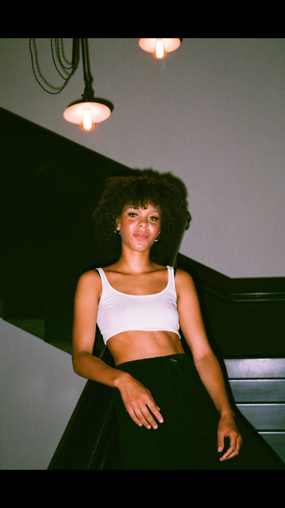

Modeling

Storyteller raised in Harlem. Howard University graduate in Media & Film with a minor in Afro-American Studies. I tell the stories that go unheard—through film, fashion, and words.
Steps on pavement, worn and cracked, Gum spit out, no turning back. Kids stomp down with careless shout, A mother's life, used, worn out... Yet, in the cracks, new life can grow, In quiet strength, her spirit glows. Though worn, she rises, finds her ground, In every step, her voice unbound. For in the wear, there's still a spark, A mother’s heart, strong, bright, and dark. Like the pavement, though scarred and torn, She finds her peace, though she’s been worn.
His power and His words, a shield so pure, A love that protects, steadfast and sure. His embrace, unyielding, holding us tight, We think our mothers’ love is the brightest light... For there’s none like Jehovah, our strength, our guide.
You keep things around that don’t hold weight, Clinging to what no longer resonates... You’ve been holding pieces of a past that never fit, Now it’s time to make room for the life that’s yours to create.
In Harlem’s heart, where rhythms weave, Four girls dance on the dreams they believe... For these Black girls, bright as the sun, Remind us, childhoods just begun.